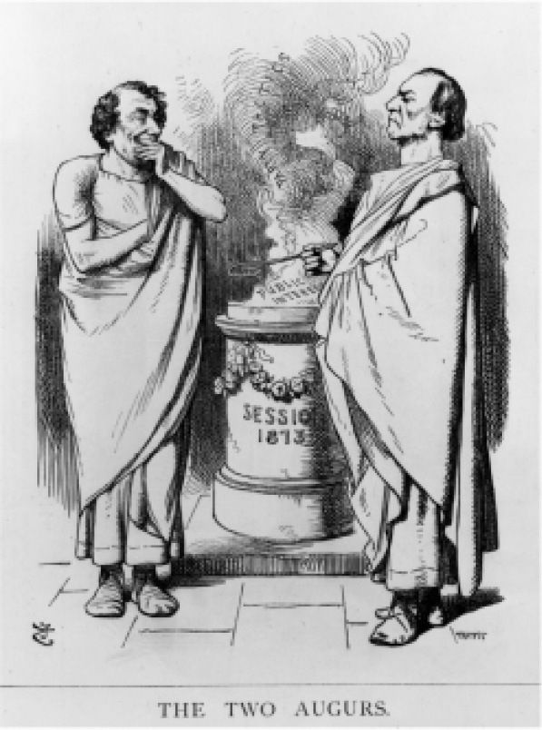

那个时候，谁也无法明智地把英国的议会制政体称作民主的。居于主导地位的是对绅士的崇拜，而不是对普通人的崇拜。卡内基读过罗伯特·彭斯的诗句：
但是，讽刺和对民主的滥用只不过是使英国选举权的增长有意地、惊人地放缓。尽管民众反响强烈，1832年《改革法案》与民主并无哪怕些许的关联：它把旧的基于财产的选举权置于统一的、更为合理的基础上，只把选民人数从43.5万增加到65.2万。黑格尔把1832年以后的英国政制称为“世界历史上自由原则最为深远的进步”。1867年《改革法案》是对工人阶级躁动的回应，比1832年《改革法案》要重要得多，但是新的财产和地租资格限制只是为了让熟练工获得选举权。到1869年，约三分之一的成年男子获得了投票权，1884年的法案又把这个比例提高到约40%。格拉德斯通和迪斯雷利都不相信完全民主的选举权：格拉德斯通是道德家和渐进主义者，迪斯雷利则是宽容的机会主义者。但是，如果说1867年《改革法案》并不完全民主，它确实创造了大量新的选民，使得政党制度必须越出威斯敏斯特，有史以来第一次在全国范围内组织和竞选。政党领袖既要在国内抛头露面，又要忍受来访的数量极多的权力掮客，这些人口音粗鲁，分别来自伯明翰、谢菲尔德、曼彻斯特和北方的那些工业城市。在主张妇女参政权的女性们进行激烈辩论、发起公民不服从运动后，把妇女同样纳入其中的普遍选举权，直到1918和1928年《人民代表法》出台才走过了令人不安的阶段。战争的紧迫性（不是什么悦耳的理由）改变了议会的意见。在工会和劳工运动日益增多的情况下，民主实践普遍存在，但在议会和议会选举中则不然。
在英国自由党内部，关于政制是否应该更为民主的辩论越来越多——劳埃德·乔治在20世纪初便如此主张，但是他的上级阿斯奎思认为已经足够民主了，就这样吧。难道英国没有新闻自由、言论自由，地方治安官不容忍民众聚会吗？“公开发表议论的地方”（The platform）比选举权范围增加得更快。

图9 在庞奇先生看来，格拉德斯通和迪斯雷利是急于预见未来政治的高贵罗马人
保守的领导人重复了许多老式论点，讲到民主的危险之处，但是渐渐地，这个该死的以“D”开头的词前面的限定词被忽略了——“肆无忌惮的”“耳目闭塞的”“过于泛滥的”或“缺乏教养的”，民主的危险也被忽略了。类似约瑟夫·张伯伦这样的人物，与之前的迪斯雷利一样，极有信心地认为人民可以被“驾驭”。张伯伦的权力基础寓于“伯明翰核心小组”（caucus，从美国政界引入的术语），却在1886年格拉德斯通的《爱尔兰自治法案》问题上与自由党决裂，击败了政府，让自己的追随者以统一党的面目与保守党结盟。他有本领以各种名义来驾驭新的选民，这些名义包括国王和国家、帝国式爱国主义、自由贸易，或者帝国的关税优惠——任何能够确保“为大众提供廉价食物”的东西。
“民主”并不是一个能够把国家凝聚起来的词。即使是在学术著作中，对英国的制度也不应该以民主相称。该制度首先是在报刊上被冠以“民主的”称谓，1916年中期在议会中该称谓则叫得相当频繁，当时英国在索姆河战役中的可怕损失呼唤着为“我们为之奋斗的东西”正名，这种东西比“国王和国家”更为伟大，后者不过是对工厂工人和新兵蛋子，尤其是身处凯尔特边缘地带的新兵蛋子更有吸引力的战斗口号（sluaghghairm）。当伍德罗·威尔逊把美国带入战争时，就官方层面来说，战争的目的变成了“拯救民主”——虽然国会随后对任何国际层面的民主都失去了兴趣，驳回了威尔逊提出的加入国际联盟的请求，为此联盟他倾注了希望，也用尽了最后的心力。战后工党的领导人急于与苏联共产主义拉开距离，显得更有兴趣利用现有的议会制度为“人民”掌权，而不是把这种制度往民主的方向上变革，使其社会主义色彩更淡。然而，工党运动中存在着紧张关系。当时“城市社会主义”力量强大，与工会和合作社一样，在决策过程及其平等主义目标方面都是民主的。有两种民主社会主义理论：一种是它应该在社会、准自治小团体、地方工会和地方政府的基础上建立起来；另一种是核心权力必须着眼于人民的利益、通过威斯敏斯特在白厅中获得利益——这是费边社的理论、韦伯夫妇的理论以及今天新工党（虽然有了“人民”的新形象）的理论。
沃尔特·白芝浩的名著《英国宪法》（The English Constitution，1867）曾被解读为一部客观的、描述性的作品，属于新型的现实主义，就像马奈《草地上的午餐》，与学院派的画作恰成对比；如白芝浩在关于君主制的那一章所说的，“考察一位退休寡妇和失业青年的行为如何变得如此重要，真是令人愉快”。但是，还不只是现实主义。这本书是为1867年《改革法案》之争所展开的论辩。作者身为自由党党员，警示了民主的危险，也提出了规避这些危险的多种方式：“女王身份尊贵，她的作用不可估量”——那一章开篇便是这句话。在这本书1872年第二版的引言中，他说得清楚明了，生怕人们读不出弦外之音：
白芝浩继续说，他最担心的是持久不变的“下层阶级的政治联合……既然他们当中这么多人有选举权……担心无知凌驾于教导之上，人数凌驾于知识之上”。至于他的担心到头来为什么是杞人忧天——即使工会运动和工党在不断壮大——则是另一回事。它的重要主题或许是，托利党和自由党的大人物们不得不学会扮演煽动家，就像罗马贵族一样；白芝浩用对那句口头禅，即“人民的呼声，上帝的声音”（Vox populi, vox dei）的蔑视来呼应他们的担心。当格拉德斯通（又一次）从退隐状态中复出，要求英国干涉土耳其对亚美尼亚的暴行时，他在从火车背后展开的著名的洛锡安郡竞选中发表演说，还在其他议员的选区中发表演说，让人立即担心英国政治正在变成美国式的。